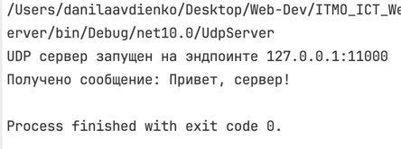
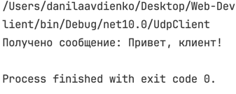
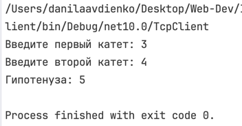
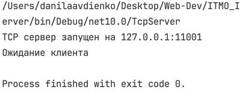
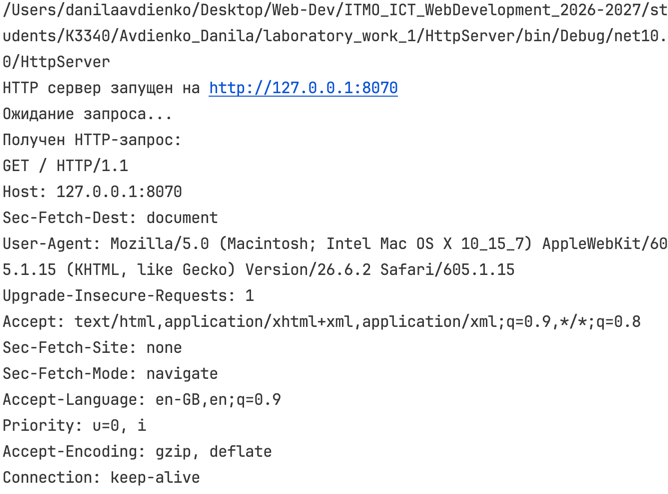
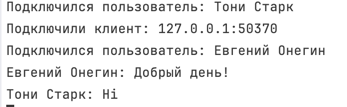
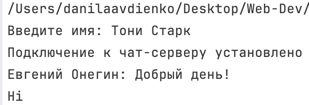
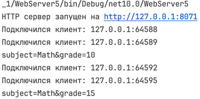
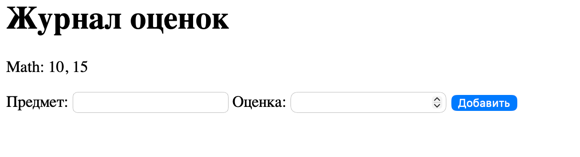

Отчёт
Практическое задание 1. Обмен сообщениями по UDP
Для обмена сообщениями используется протокол UDP
Note
UDP не устанавливает постоянное соединение между клиентом и сервером Данные передаются отдельными датаграммами
Используемые пространства имён
// пространства имен
using System.Net; // ip-адреса и сетевые эндпоинты
Классы связанные с обменом данными по сети
using System.Net.Sockets; // сокеты
Сокет — это программная точка, через которую приложение отправляет и получает данные по сети
using System.Text; // для кодировки текста в байты и обратно
Нужно так как по сети передаются байты, а не текст/другие данные в чистом виде
SocketType задаёт модель передачи данных сокета. Для UDP используется SocketType.Dgram, так как данные передаются отдельными датаграммами
Сервер
Полный код сервера
using System.Net;
using System.Net.Sockets;
using System.Text;
Socket serverSocket = new Socket(
AddressFamily.InterNetwork,
SocketType.Dgram,
ProtocolType.Udp
);
EndPoint serverEndPoint = new IPEndPoint(IPAddress.Loopback, 11000); // здесь создаем эндпоинт (айпи+порт)
serverSocket.Bind(serverEndPoint);// присваиваем сокет к адресу
Console.WriteLine("");
byte[] buffer = new byte[1024]; // список байтов, где будет побайтово храниться полученное сообщение
EndPoint clientEndPoint = new IPEndPoint(IPAddress.Any, 0); // создаем эндпоинт клиента (заглушка)
int receivedBytes = serverSocket.ReceiveFrom(buffer, ref clientEndPoint);
string message = Encoding.UTF8.GetString(buffer, 0, receivedBytes);
Console.WriteLine($"Received: {message}");
byte[] response = Encoding.UTF8.GetBytes("Hello, client");
serverSocket.SendTo(response, clientEndPoint);
serverSocket.Close();
Note
Метод ReceiveFrom() записывает полученные данные в буфер,
возвращает количество полученных байтов и сохраняет endpoint отправителя.
Сервер привязывает UDP-сокет к 127.0.0.1:11000, получает сообщение клиента и отправляет ответ на адрес отправителя.
Клиент
Полный код клиента
using System.Net;
using System.Net.Sockets;
using System.Text;
Socket clientSocket = new Socket(
AddressFamily.InterNetwork,
SocketType.Dgram,
ProtocolType.Udp
);
IPEndPoint serverEndPoint = new IPEndPoint(IPAddress.Loopback, 11000);
byte[] message = Encoding.UTF8.GetBytes("Привет, сервер!");
clientSocket.SendTo(message, serverEndPoint);
byte[] buffer = new byte[1024];
EndPoint remoteEndPoint = new IPEndPoint(IPAddress.Any, 0);
int receivedBytes = clientSocket.ReceiveFrom(buffer, ref remoteEndPoint);
string response = Encoding.UTF8.GetString(buffer, 0, receivedBytes);
Console.WriteLine($"Получено сообщение: {response}");
clientSocket.Close();
Клиент отправляет сообщение на endpoint сервера, после чего ожидает ответ и выводит его в консоль.
На примере ниже клиент отправляет сообщение UDP-серверу и получает ответ
Сервер принимает сообщение клиента и отправляет ответ обратно
Пример работы
Сервер:

Клиент:

Практическое задание 2. Вычисления через TCP
Для обмена данными используется протокол TCP.
Note
TCP устанавливает соединение между клиентом и сервером перед передачей данных. В отличие от UDP, TCP гарантирует доставку данных и сохранение порядка байтов.
В данном варианте клиент отправляет серверу два катета прямоугольного треугольника. Сервер вычисляет гипотенузу по теореме Пифагора и возвращает результат клиенту.
Сервер
Полный код сервера
using System.Net;
using System.Net.Sockets;
using System.Text;
Socket serverSocket = new Socket(
AddressFamily.InterNetwork,
SocketType.Stream, // непрерывный поток байтов
ProtocolType.Tcp
);
IPEndPoint serverEndPoint = new IPEndPoint(IPAddress.Loopback, 11001);
serverSocket.Bind(serverEndPoint);
serverSocket.Listen(1); // переводим сокет в режим ожидания TCP-подключений
Console.WriteLine("TCP сервер запущен на 127.0.0.1:11001");
Console.WriteLine("Ожидание клиента...");
Socket clientSocket = serverSocket.Accept(); // принимаем подключение клиента
byte[] buffer = new byte[1024];
int receivedBytes = clientSocket.Receive(buffer);
string message = Encoding.UTF8.GetString(buffer, 0, receivedBytes);
string[] values = message.Split(' ');
double a = double.Parse(values[0]);
double b = double.Parse(values[1]);
double c = Math.Sqrt(a * a + b * b);
byte[] response = Encoding.UTF8.GetBytes(c.ToString());
clientSocket.Send(response);
clientSocket.Close();
serverSocket.Close();
Note
Listen() переводит серверный сокет в режим прослушивания входящих TCP-подключений
Accept() принимает подключение и создаёт отдельный сокет для взаимодействия с конкретным клиентом.
После установки TCP-соединения сервер получает два числа, вычисляет гипотенузу и отправляет результат обратно клиенту.
Клиент
Полный код клиента
using System.Net;
using System.Net.Sockets;
using System.Text;
Socket clientSocket = new Socket(
AddressFamily.InterNetwork,
SocketType.Stream,
ProtocolType.Tcp
);
EndPoint serverEndPoint = new IPEndPoint(IPAddress.Loopback, 11001);
clientSocket.Connect(serverEndPoint); // устанавливаем TCP-соединение с сервером
Console.Write("Введите первый катет: ");
double a = double.Parse(Console.ReadLine()!);
Console.Write("Введите второй катет: ");
double b = double.Parse(Console.ReadLine()!);
string message = $"{a} {b}";
byte[] data = Encoding.UTF8.GetBytes(message);
clientSocket.Send(data);
byte[] buffer = new byte[1024];
int receivedBytes = clientSocket.Receive(buffer);
string response = Encoding.UTF8.GetString(buffer, 0, receivedBytes);
Console.WriteLine($"Гипотенуза: {response}");
clientSocket.Close();
Note
После коннекта клиентский сокет уже связан с сервером, поэтому для отправки используется Send, а не SendTo с указанием конкнретного энпоинта
На примере ниже клиент передаёт серверу значения двух катетов
Сервер вычисляет длину гипотенузы и отправляет результат обратно клиенту
Пример работы
Сервер:

Клиент:

Практическое задание 3. Раздача HTML-страницы по HTTP
В данном задании реализуется простой HTTP-сервер. В качестве клиента используется браузер.
HTTP поверх TCP
HTTP работает поверх TCP. TCP отвечает за передачу байтов между клиентом и сервером, а HTTP определяет формат и смысл передаваемых данных
При открытии http://127.0.0.1:8070 браузер устанавливает TCP-соединение с сервером и автоматически отправляет HTTP-запрос
Сервер
Полный код сервера
using System.Net;
using System.Net.Sockets;
using System.Text;
Socket serverSocket = new Socket(
AddressFamily.InterNetwork,
SocketType.Stream,
ProtocolType.Tcp
);
IPEndPoint serverEndPoint = new IPEndPoint(IPAddress.Loopback, 8070);
serverSocket.Bind(serverEndPoint);
serverSocket.Listen(1); // бэклог (очередь) из одного
Console.WriteLine("HTTP сервер запущен на http://127.0.0.1:8070");
Console.WriteLine("Ожидание запроса...");
Socket clientSocket = serverSocket.Accept(); // берем следующий из очереди
byte[] requestBuffer = new byte[1024];
int receivedBytes = clientSocket.Receive(requestBuffer);
string request = Encoding.UTF8.GetString(requestBuffer, 0, receivedBytes);
Console.WriteLine($"Получен HTTP-запрос:\n{request}");
string html = File.ReadAllText("index.html"); // контент страницы считываем
byte[] htmlBytes = Encoding.UTF8.GetBytes(html);
// вручную формируем HTTP-заголовки ответа
string headers =
"HTTP/1.1 200 OK\r\n" +
"Content-Type: text/html; charset=UTF-8\r\n" +
$"Content-Length: {htmlBytes.Length}\r\n" +
"Connection: close\r\n" +
"\r\n";
byte[] response = Encoding.UTF8.GetBytes(headers + html);
clientSocket.Send(response);
clientSocket.Close();
serverSocket.Close();
HTTP-ответ
HTTP-ответ состоит из строки статуса, заголовков, пустой строки и тела ответа
У нас сервер формирует следующие заголовки:
HTTP/1.1 200 OK
Content-Type: text/html; charset=UTF-8
Content-Length
Connection: close
200 OK— запрос успешно обработан;Content-Type— сервер передаёт HTML в кодировке UTF-8;Content-Length— размер HTML-страницы в байтах;Connection: close— после отправки ответа TCP-соединение закрывается.
Последовательность \r\n используется для разделения строк HTTP-заголовков, а \r\n\r\n отделяет заголовки от тела ответа
На примере ниже браузер отправляет GET-запрос HTTP-серверу
Сервер получает запрос и возвращает HTML-страницу, которая отображается в браузере
Пример работы
HTTP-запрос в терминале сервера:

Задание 4. Многопользовательский TCP-чат
Для реализации многопользовательского чата используется протокол TCP
Сервер принимает подключения клиентов, получает их имена и пересылает сообщения между подключёнными пользователями
В ходе выполнения задания был реализован многопользовательский чат с отдельной обработкой каждого клиента, рассылкой сообщений между пользователями и возможностью выхода из чата
Многопоточность
После подключения клиента сервер создаёт для него отдельный поток (тред)
Основной поток после этого возвращается к Accept и продолжает принимать новые подключения
В нашем коде каждый клиент обрабатывается независимо, и ожидание сообщения от одного пользователя не блокирует остальных
Хранение подключённых клиентов
Подключённые пользователи хранятся в словаре, где ключ это имя пользователя, а значение - его сокет
Поскольку словарь используется сразу несколькими потоками, доступ к нему синхронизируется через lock
Код сервера
using System.Net;
using System.Net.Sockets;
using System.Text;
Socket serverSocket = new Socket(
AddressFamily.InterNetwork,
SocketType.Stream,
ProtocolType.Tcp
);
Dictionary<string, Socket> clients = new();
object clientsLock = new();
IPEndPoint serverEndPoint = new IPEndPoint(IPAddress.Loopback, 11002);
serverSocket.Bind(serverEndPoint);
serverSocket.Listen(10);
Console.WriteLine("Чат-сервер запущен на 127.0.0.1:11002");
while (true) // после подключения возвращаемся к аксепт и ждем новое подключение
{
Socket clientSocket = serverSocket.Accept();
Console.WriteLine($"Подключили клиент: {clientSocket.RemoteEndPoint}");
Thread clientThread = new Thread(() => HandleClient(clientSocket)); // отдельный поток для каждого подключения (клиента)
clientThread.Start();
}
void HandleClient(Socket clientSocket) // принимаем имя клиента, обрабатываем его сообщения, отправляем другим клиентам
{
byte[] buffer = new byte[1024];
int receivedBytes = clientSocket.Receive(buffer);
string userName = System.Text.Encoding.UTF8.GetString(
buffer,
0,
receivedBytes
);
lock (clientsLock) // блокируем доступ к коллекции clients:
// пока текущий поток находится внутри этого lock,то
// другие потоки не могут войти в блоки с тем же clientsLock
{
clients[userName] = clientSocket;
}
Console.WriteLine($"Подключился пользователь: {userName}");
while (true)
{
receivedBytes = clientSocket.Receive(buffer);
string message = Encoding.UTF8.GetString(
buffer,
0,
receivedBytes
);
if (message == "/exit")
{
break;
}
string fullMessage = $"{userName}: {message}";
Console.WriteLine(fullMessage);
byte[] messageBytes = Encoding.UTF8.GetBytes(fullMessage);
lock (clientsLock) // ставим лок, чтобы во время перебора никто не записался в словарь
{
foreach (var client in clients)
{
if (client.Value != clientSocket)
{
client.Value.Send(messageBytes);
}
}
}
}
lock (clientsLock)
{
clients.Remove(userName);
}
clientSocket.Close();
Console.WriteLine($"Пользователь {userName} вышел из чата");
}
Получение сообщений на клиенте
Клиент должен одновременно принимать сообщения от сервера и ожидать ввод пользователя
Поэтому получение сообщений выполняется в отдельном потоке, а основной поток используется для отправки
Рассылка сообщений
Сервер перебирает словарь подключённых клиентов и отправляет сообщение всем сокетам кроме сокета отправителя
Благодаря этому сообщение одного пользователя получают остальные участники чата
Код клиента
using System.Net;
using System.Net.Sockets;
using System.Text;
Socket clientSocket = new Socket(
AddressFamily.InterNetwork,
SocketType.Stream,
ProtocolType.Tcp
);
EndPoint serverEndPoint = new IPEndPoint(IPAddress.Loopback, 11002);
clientSocket.Connect(serverEndPoint);
// считываем и отправляем серверу имя клиента
Console.Write("Введите имя: ");
string userName = Console.ReadLine()!;
byte[] nameBytes = System.Text.Encoding.UTF8.GetBytes(userName);
clientSocket.Send(nameBytes);
Thread receiveThread = new Thread(() => ReceiveMessages(clientSocket));
receiveThread.Start();
Console.WriteLine("Подключение к чат-серверу установлено");
// отправляем сообщения на сервер
while (true)
{
string message = Console.ReadLine()!;
byte[] messageBytes = Encoding.UTF8.GetBytes(message);
clientSocket.Send(messageBytes);
if (message == "/exit")
{
break;
}
}
clientSocket.Close();
void ReceiveMessages(Socket clientSocket) // метод для получения сообщений от других клиентов
{
byte[] buffer = new byte[1024];
try
{
while (true)
{
int receivedBytes = clientSocket.Receive(buffer);
if (receivedBytes == 0)
{
break;
}
string message = Encoding.UTF8.GetString(
buffer,
0,
receivedBytes
);
Console.WriteLine(message);
}
}
catch (SocketException)
{
}
}
В итоге получили многопользовательский TCP-чат, в котором несколько клиентов могут одновременно подключаться к серверу,
отправлять сообщения всем другим пользователям и завершать соединение с помощью команды /exit
Пример работы программы
На примере ниже к серверу одновременно подключены два клиента с разными именами
Сообщения одного пользователя передаются другому через сервер


Задание 5. HTTP-сервер с журналом оценок
В этом задании был реализован простой журнал оценок на HTTP-сервере
Сервер принимает GET и POST запросы, хранит оценки в словаре и формирует HTML-страницу с текущими записями
GET и POST
GET используется для получения страницы журнала
При гет-запросе сервер берет текущие записи из словаря, добавляет их в HTML и отправляет страницу браузеру
POST используется для добавления новой оценки
Браузер отправляет серверу название предмета и оценку из HTML-формы, после чего сервер сохраняет их в словарь
Тело POST-запроса
Заголовки HTTP-запроса отделяются от его тела через \r\n\r\n
В теле POST-запроса приходят данные формы в формате subject=Math&grade=10
Тело POST-запроса не приходило в первом Receive, поэтому пришлось делать еще один Receive и дочитывает его
Код сервера
using System.Net;
using System.Net.Sockets;
using System.Text;
Socket serverSocket = new Socket(
AddressFamily.InterNetwork,
SocketType.Stream,
ProtocolType.Tcp
);
Dictionary<string, List<int>> grades = new(); // словарь для записей
EndPoint serverEndPoint = new IPEndPoint(IPAddress.Loopback, 8071);
serverSocket.Bind(serverEndPoint);
serverSocket.Listen(10);
Console.WriteLine("HTTP сервер запущен на http://127.0.0.1:8071");
while (true) // цикл обработки подключения и его get/post запросов
{
Socket clientSocket = serverSocket.Accept();// принимаем новое TCP-соединение
Console.WriteLine($"Подключился клиент: {clientSocket.RemoteEndPoint}");
byte[] buffer = new byte[4096]; // буфер для полученного HTTP-запроса
int receivedBytes = clientSocket.Receive(buffer);
string request = Encoding.UTF8.GetString(buffer, 0, receivedBytes);
if (request.StartsWith("POST") && request.Split("\r\n\r\n")[1] == "") // если POST пришёл без тела, то дочитываем его отдельно
{
receivedBytes = clientSocket.Receive(buffer);
request += Encoding.UTF8.GetString(buffer, 0, receivedBytes);
}
if (request.StartsWith("GET")) // get-request
{
string gradeList = ""; // создаем строку для передачи в html-код
foreach (var subject in grades)
{
gradeList += $"<p>{subject.Key}: {string.Join(", ", subject.Value)}</p>"; // циклом создаем строки из всех записей словаря
}
string html = $"""
<!DOCTYPE html>
<html lang="ru">
<head>
<meta charset="UTF-8">
<title>Журнал оценок</title>
</head>
<body>
<h1>Журнал оценок</h1>
{gradeList}
<form method="POST" action="/grade">
<label>Предмет:</label>
<input type="text" name="subject">
<label>Оценка:</label>
<input type="number" name="grade">
<button type="submit">Добавить</button>
</form>
</body>
</html>
""";
byte[] htmlBytes = Encoding.UTF8.GetBytes(html);
string headers =
"HTTP/1.1 200 OK\r\n" +
"Content-Type: text/html; charset=UTF-8\r\n" +
$"Content-Length: {htmlBytes.Length}\r\n" +
"Connection: close\r\n" +
"\r\n";
clientSocket.Send(Encoding.UTF8.GetBytes(headers + html));
}
else if (request.StartsWith("POST")) // обработка пост-запроса
{
string body = request.Split("\r\n\r\n")[1]; // получаем тело запроса
string[] data = body.Split('&'); // получаем отдельно поля subject и grade
string subject = data[0].Split('=')[1]; // парсим значения полей
int grade = int.Parse(data[1].Split('=')[1]);
if (!grades.ContainsKey(subject)) // создаем новую запись при необходимости
grades[subject] = new List<int>();
grades[subject].Add(grade);
clientSocket.Send(Encoding.UTF8.GetBytes( // отправляем браузеру команду заново открыть стартовую страницу
"HTTP/1.1 303 See Other\r\nLocation: /\r\n\r\n"
));
Console.WriteLine(body);
}
clientSocket.Close();
}
Перенаправление после POST
После добавления оценки сервер отвечает кодом 303 See Other и передает Location: /
После этого браузер снова делает GET / и показывает уже обновленный журнал
В итоге получили простой HTTP-сервер, работающий с двумя методами для добавления оценок и их просмотра
Пример работы программы

